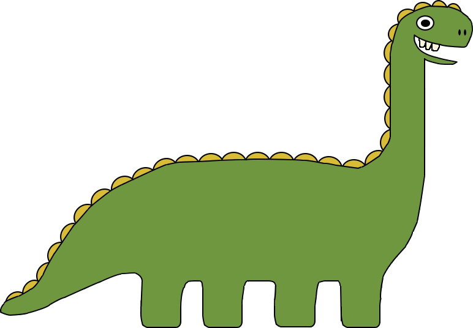
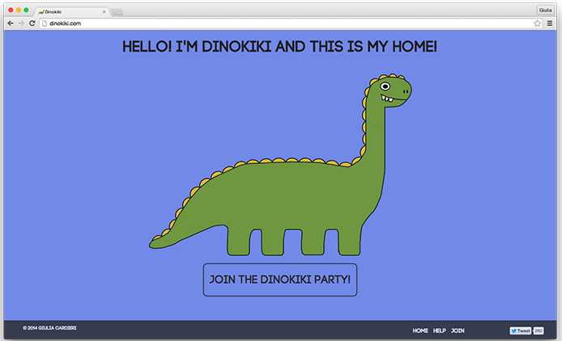
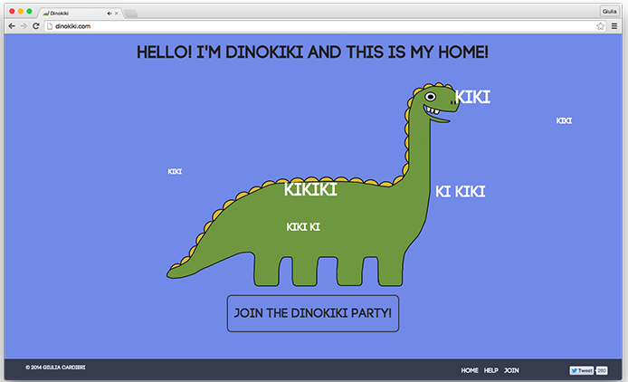
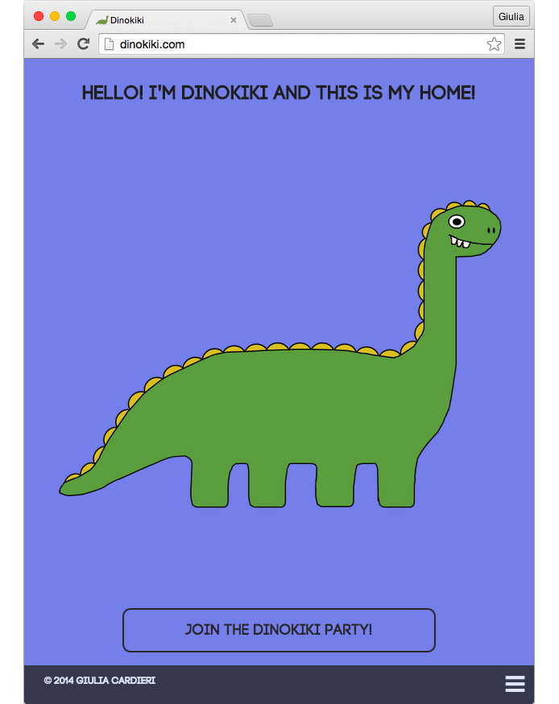
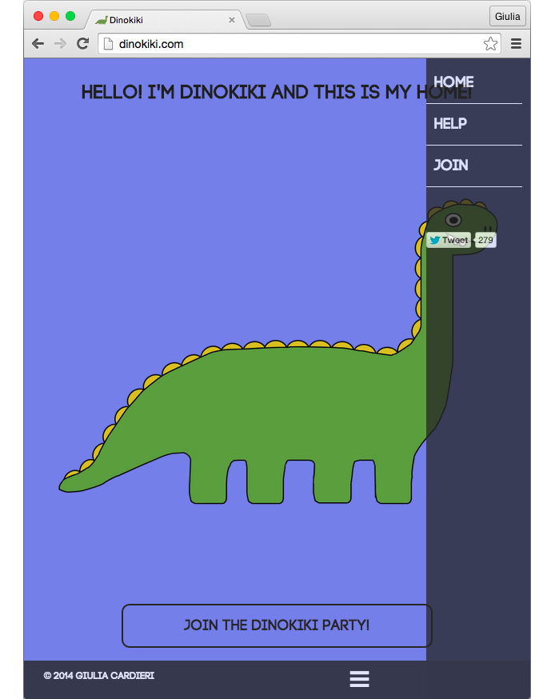
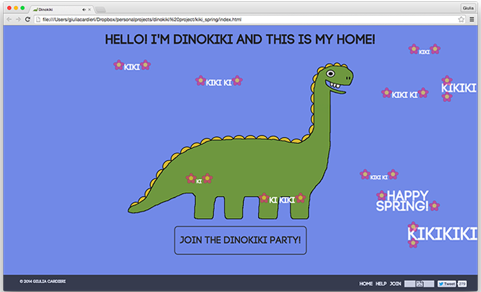
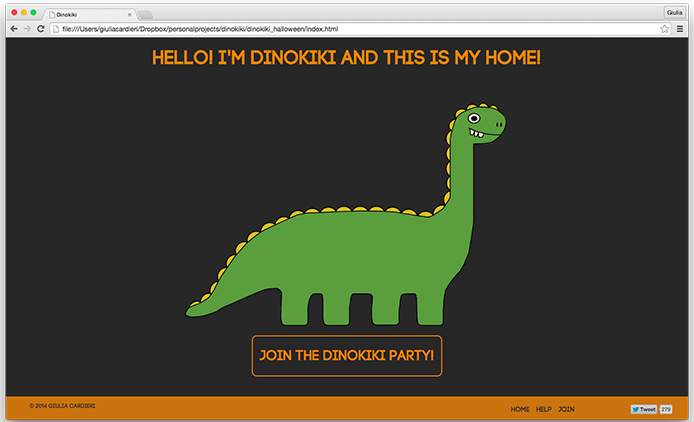
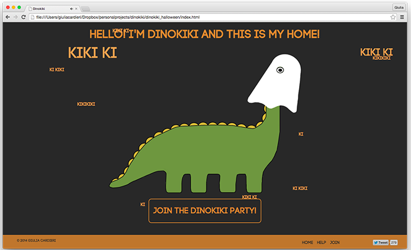
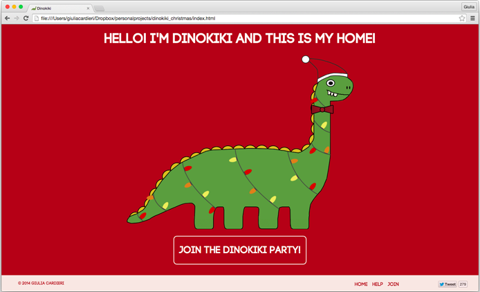

DINOKIKI
A DINOSAUR THAT SAYS KIKI?
Dinokiki is an idea inspired by the website pls pet doge and Jerome Jarre's and Nicholas Megalis' Vine "Mama Dinosaur Finds Its Baby". I really wanted to learn javascript and I thought using a fun project would be nice! (and I was right!) My friends supported me recording kikis while I tried to design a character and program in javascript for the first time.




DINOKIKI DURING THE YEAR
Dinokiki had a few special seasonal versions. Each one had one or more different features on its design. Check them out!





Let's get in touch!